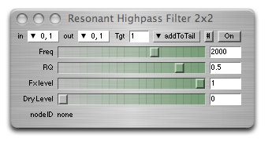

ixiQuarks : Filters

| Filters |
|
The filters are of the most basic filter types: Band pass filter, low pass filter, high pass filters, resonant low and high pass, resonant filter and klank filters. Just as with the effects, you can take in any audio channel and output the filtered sound on any audio channel. There is a filtered sound level and the level of the dry sound itself. It can be useful. |